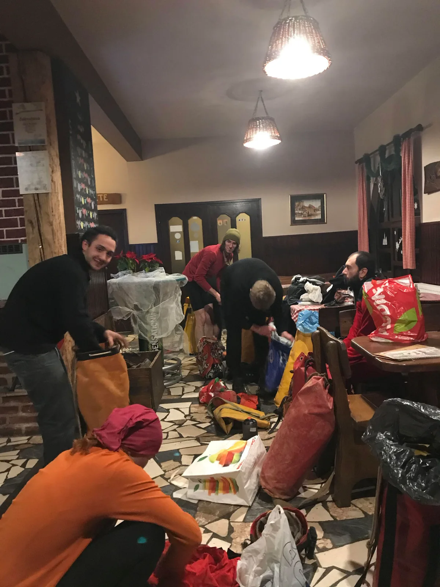

Doček Nove u Kiti
Ako te putem na Crnopac prati divlji zec, Kita će se produljiti za 33 metra.

Napisao: Mak Sedmak Fotografije: Lovel Kukuljan
Prokušana ekipa koju su sačinjavali velebitaši: Ela Kovač, Marina Grandić, Edo Vričić, Marko Ličko (vođa) te Mak Sedmak, ovoga puta nadopunjena je Lovelom Kukuljanom (SU Estavela). Nakon sastanka kod Žute lokve, nagurali smo se u Ličkovu mašinu pa krenuli prema još jednom istraživanju Kite. Uprkos korištenju autoputa, kasni sati su se nadvili nad nama pa smo kontaktirali našu gostionu Zvonimir gdje se javila Teta Nada te rekla da zatvaraju, ali će reći šefovima da dolaze špiljari.
[caption id="attachment_1782" align="alignleft" width="398"] Modna revija erotskog i ostalog donjeg rublja, sezona "Kita 2017". (Snimio: Stjepan Mesić, restoran "Zvonimir")[/caption]Mi došli u Gračac, a oni nas čekali u praznoj birtiji bez konobarica. Nakon malo pričanja, prionuli smo na spremanje stvari, a zatim popili subvencionirano pivo i kratko na račun kuće. Tako je počeo naš produženi vikend. Uslijedio je kratki uspon na Crnopac, gdje nam je dobro poznati put pratio jedan divlji zec (nama se činio ok). Dugo nam je pravio društvo da bi nas na kraju napustio uz nekoliko gracioznih skokova prema snježnoj šumi. Neki od nas u imali želje da spavaju vani, ali na sreću je demokracija učinila svoje pa smo vrlo brzo krenuli prema nutrini planine. Posao nas je čekao na Makiti, ali smo prvu noć proveli u bivku na Ašovu. Nakon dolaska na Makitu, shvaćamo da za gomile hrane koju smo pripremili treba imati i lonac... Ela i ja krećemo u šetnju, a ostatak ekipe odlazi na šljaku. Prvi dan posla se dovršavaju repovi od prošlog posjeta Makiti, kada je ista ekipa (skoro svima nam je to bio prvi ulazak u Kitu) došla vidjeti što ima, pa smo nešto i radili. Marina je ovog puta dovršila Edin penj, a za to vrijeme je Ličko postavio Zločin i kaznu. Na Staru godinu smo napravili tri ekipe; Ličko i Ela su klesali perspektivnu rupicu kod Balkona, Lovel i Marina su tukli meandar pa zaradili 15-ak metara, a Edo i ja smo postavili Živo blato, a na kraju vertikale pronašli još jednu vertikalu od 15 m, ali nismo imali mogućnosti probiti se do nje. Stoga smo pustili opremu, pa se lagano zaputili na slavlje. Uzevši u obzir da smo veoma konzervativni, uzeli smo sarme, prasetinu, francusku salatu i prskalice da se tradicija poštuje, ali smo fulali samu Novu godinu. Nije nam smetalo jer smo svoji gazde pa smo se proveselili još nekoliko puta, a oko podneva smo krenuli van. Dok smo pakirali stvari kiša je rominjala, a kada je krenula padati, napustili smo parking i krenuli u novu godinu.
Razlog našeg ulaska je bio da u dva dana posla pokušamo locirati spoj sa drugim objektom (Muda labudova). Ovoga puta nismo uspjeli, ali je sada lako pristupiti do upitnika pa se može raditi i vikendom.
(Op. ur.) Dodajmo ovoj priči i sažetak Aide Barišić:
"Nova duljina KG DP 34.305 m
U 14-oj godini istraživanja, dakle u 2017., bilo je 14 istraživanja i pamtiti ćemo je po najvećem broju istraživanja ali i sa "teškim" novim metrima; novonacrtano je 1.891m ili prosječno 135m; u posljednjem istraživanju novonacrtano 33m i nova službena duljina KG-DP iznosi 34.305m, a ako pogledamo Bobovu listu najduljih objekata planete onda je sa novom duljinom na 123. mistu - nije loše, nije loše" http://www.caverbob.com/wlong.htm
Ako vas zanima dosadašnja kompletna povijest istraživanja našeg najduljeg jamskog sustava, ujedno i najsloženijeg istraživanja u povijesti hrvatske speleologije, sve to je pedantno posloženo, detaljno opisano i digitalno otisnuto u izdanju "Kita u knjizi", koju su pripremili Mihovilci Aida i Teo (naravno), a koju možete skinuti na ovom linku.
[gallery ids="1778,1772,1779,1773,1774,1776,1777,1775" type="rectangular"]